1.3 於虛擬機器安裝作業系統
再安裝完 VirtualBox 後，打開並不會有預先安裝好的作業系統，需要在 VirtualBox 內自行安裝作業系統。首先介紹 VirtualBox 的使用者介面:

Figure 1.1: VirtualBox 的操作介面
如 1.1 所示，右邊主要功能圖示由左而右的功能分別是:
喜好設定: 設定 VirtualBox 的整體設定，像是軟體語言、虛擬機器預設存放位置…等等匯入: 匯入虛擬機器檔案 (.ovf)匯出: 匯出虛擬機器檔案新增: 新增新的虛擬主機加入: 加入已經存在的虛擬主機
1.3.1 新增 Ubuntu 作業系統設定
所以要新增新的虛擬機器是按「新增」。

這裡先點選「專家模式」，專家模式可以一併設定虛擬機器的所有設定。

記憶體大小根據每個人電腦的性能做調整，虛擬主機沒用來做什麼事最多4Gb (4 * 1024Mb) 就很夠用了。這裡要注意的一點是，虛擬機器的存放位置，當你要轉移虛擬機器時才不會找不到。
預設的虛擬機器存放位置位於使用者資料夾中的Virtual VMs資料夾，像我的使用者是qaz85，那虛擬機器就位於:
C:\Users\qaz85\VirtualBox VMs從這張圖可以看到院伺服器的磁碟配置是由兩個 1Tb 的硬碟組成，且用Raid-1 (映射模式) 將伺服器同時映射備份至另一個硬碟。
lsblkNAME MAJ:MIN RM SIZE RO TYPE MOUNTPOINT
sdb 8:16 0 931.5G 0 disk
├─sdb2 8:18 0 852.5G 0 part
├─sdb3 8:19 0 32G 0 part
├─sdb1 8:17 0 512M 0 part
└─isw_ecbbadhihd_Raid1 253:0 0 885G 0 dmraid
├─isw_ecbbadhihd_Raid1p1 253:1 0 512M 0 part /boot/efi
├─isw_ecbbadhihd_Raid1p2 253:2 0 852.5G 0 part /
└─isw_ecbbadhihd_Raid1p3 253:3 0 32G 0 part [SWAP]
sr0 11:0 1 1024M 0 rom
sda 8:0 0 931.5G 0 disk
├─sda2 8:2 0 852.5G 0 part
├─sda3 8:3 0 32G 0 part
├─sda1 8:1 0 512M 0 part
└─isw_ecbbadhihd_Raid1 253:0 0 885G 0 dmraid
├─isw_ecbbadhihd_Raid1p1 253:1 0 512M 0 part /boot/efi
├─isw_ecbbadhihd_Raid1p2 253:2 0 852.5G 0 part /
└─isw_ecbbadhihd_Raid1p3 253:3 0 32G 0 part [SWAP]
所以這裡也選擇跟院伺服器一樣的1000Gb做為系統硬碟，類型與版本記得設定為 Linux 與 Ubuntu 64位元 版本。完成之後點擊「建立」。
這裡我會選 VMDK 格式的原因是因為，如果要轉移虛擬主機檔案時，單一個檔案會輕易地超過 4Gb，而超過此上限得檔案在複製時，如果目的地的裝置格式不是 ntfs 的話，會沒有辦法複製。為了預防這個問題，我在這邊先選擇 VMDK 作為我虛擬主機的檔案格式。
這裡如果選擇「固定大小」會新增一個跟你設定的檔案大小一樣大的虛擬機器檔案，除非你的硬碟很大，否則不建議這麼做。

完成後，會在 Virtual Machine 的選單左邊看見剛剛新建的虛擬機器，不過此時的虛擬機器內還沒有作業系統。
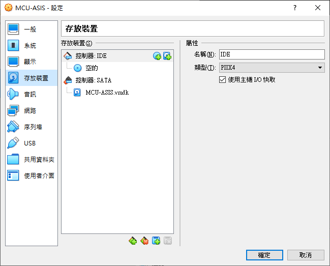
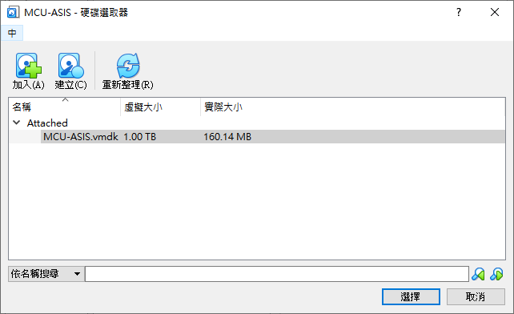
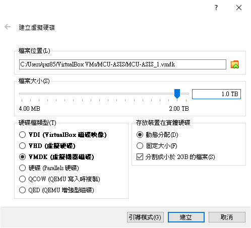
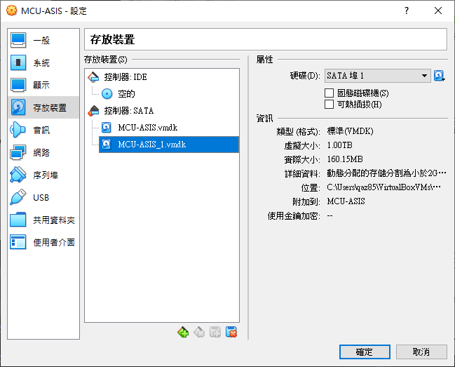
1.3.2 於 VirtualBox 安裝作業系統
在安裝作業系統之前，要先下載作業系統，因為目前的院伺服器系統是 Ubuntu 、我自己的 VPS 也是 Ubuntu ，而且我摸得比較熟的也是 Ubuntu 那有什麼理由換掉呢？所以這裡我也以 Ubuntu 作為我們院伺服器主要的系統。
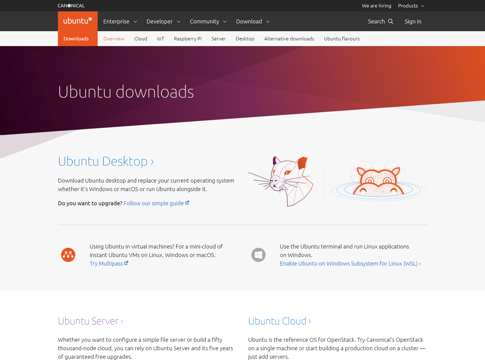
進到 Ubuntu 官方網站的下載介面，這次我們選擇伺服器版本 (Ubuntu Server) 代替以往的桌面版本 (Ubuntu Desktop)。因為如果是伺服器，不需要圖形介面就可以管理了，相對於桌面版本也較節省資源。
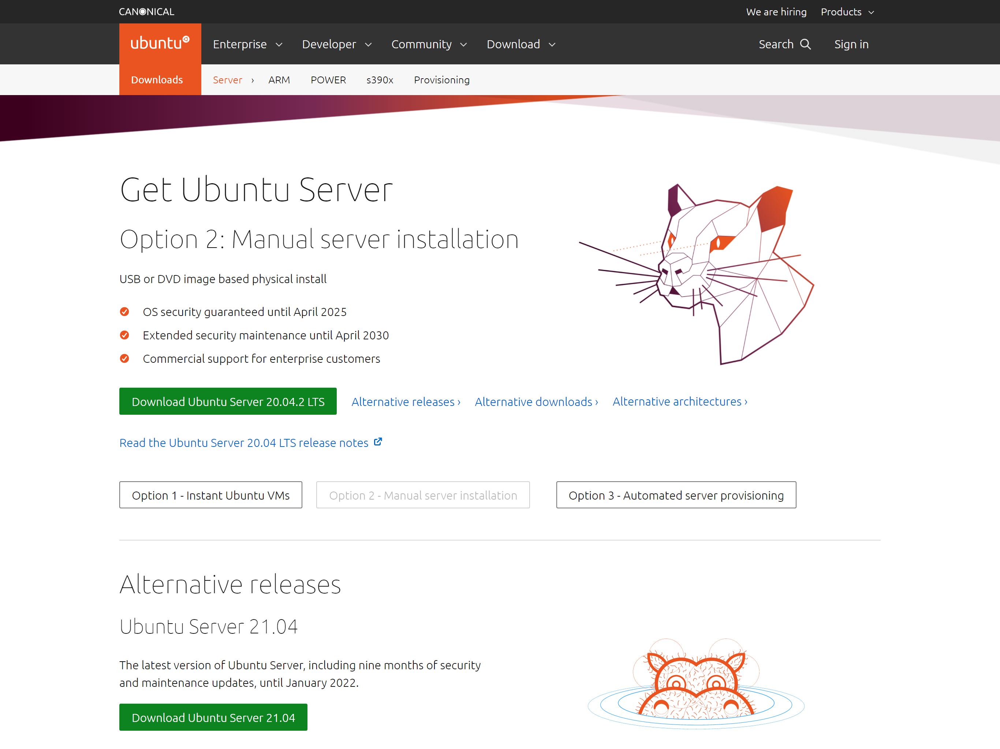
選擇「Option 2 - Manual server Installation」選項之後，按上面的綠色按鈕「Download Ubuntu Server 20.04.2 LTS」會跳轉到下載頁面，開始下載 Ubuntu 系統映像檔案 (*.iso)。
其他選項的簡易說明:
Option 1 - Instant Ubuntu VMs: Multipass 是快速部屬虛擬機器的軟體，詳細說明可以看這裡，而這裡我們已經選用 VirtualBox 了所以不會用到Option 2 - Manual server installation: 傳統的下載映像檔案Option 3 - Automated server provisioning: 利用 MaaS (Metal-as-a-Service) 安裝虛擬機。MaaS是管理數台虛擬主機用的服務，並不局限於 Ubuntu，Windows、CentOS 與 ESXi都可以在上面部屬。
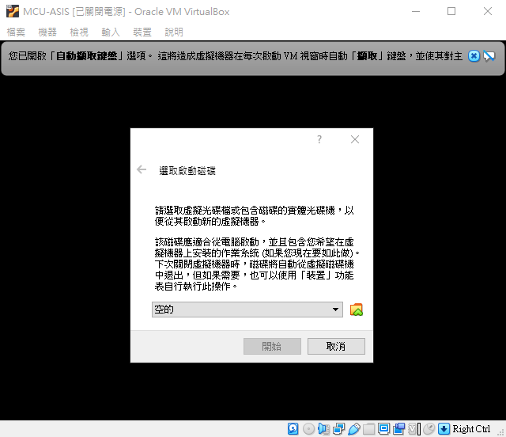
待下載完成後，開啟剛剛創建的「MCU-ASIS」虛擬主機，會跳出一個選擇啟動磁碟的訊息提示視窗，這裡我們點擊右下角的資料夾📁。
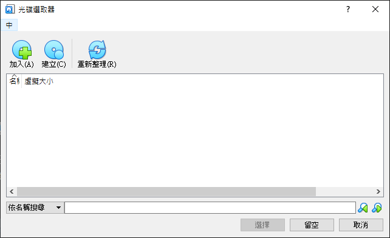
按「加入」並選擇剛剛下載下來的映像檔案 (ubuntu-20.04.2-live-server-amd64.iso)。加入完成後按「選擇」，接著按「開始」掛載映像檔案至虛擬主機中開始安裝。
1.3.2.1 語言

稍待 Ubuntu 作業系統映像檔載入後，安裝程式會跳出選擇語言的畫面，在這裡選擇適合你的語言。
在安裝過程中使用方向鍵⬆️⬇️⬅️➡️ (選擇)、Enter↪️ (確認) 與 Esc (返回) 操控安裝程式介面。
1.3.2.3 網路連線
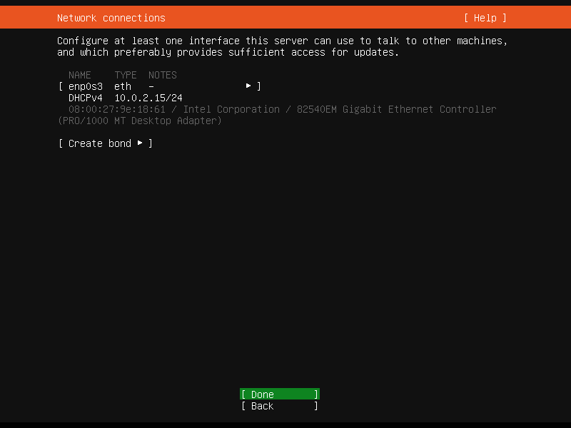
這裡可以設定 Ubuntu 的網路連線，預設是由 DHCP 設定，通常不用變更，如果這裡連線失敗，也可以等開機後再做設定。
1.3.2.4 Proxy

除非網路需要設定 proxy (代理伺服器)，否則不需要設定。
1.3.2.5 鏡像 (Mirror)
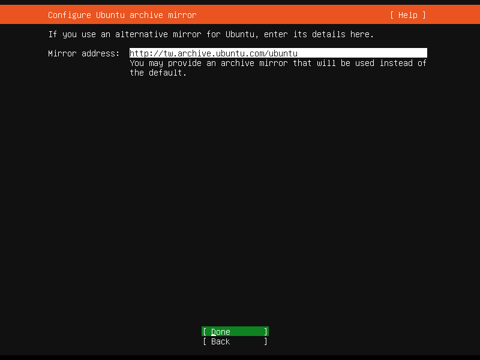
同上，不需要特別設定 mirror (鏡像)，安裝程式會自動判斷選擇哪個地方的鏡像網址更新。
1.3.2.6 安裝程式更新 (可能不會出現)
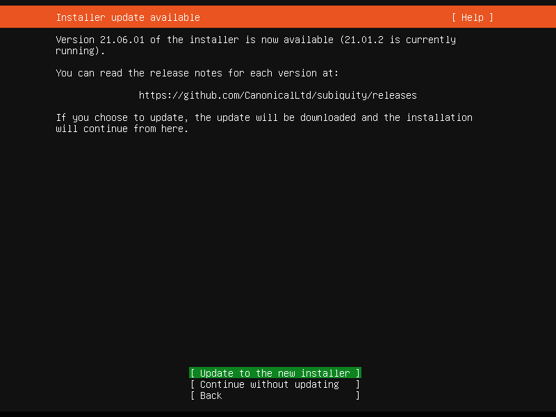
如果出現了這個畫面代表安裝程式有新的版本，可以在安裝時順便更新，當然，也可以在系統安裝完後更新。
1.3.2.7 系統空間配置 (Raid-1)
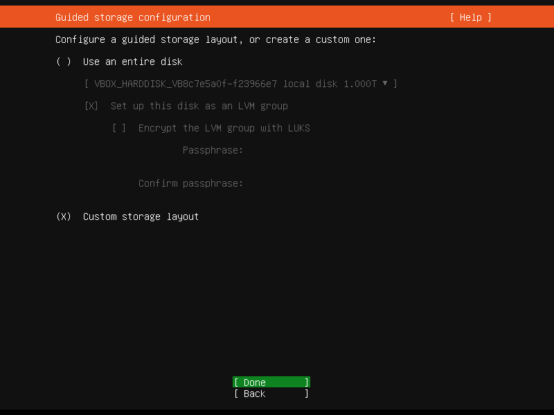
這裡選擇下面的「Custom storage layout」。以下 Raid-1 相關的設定是參考 (Evangelou 2020) 的 Gist 翻譯成中文寫的。
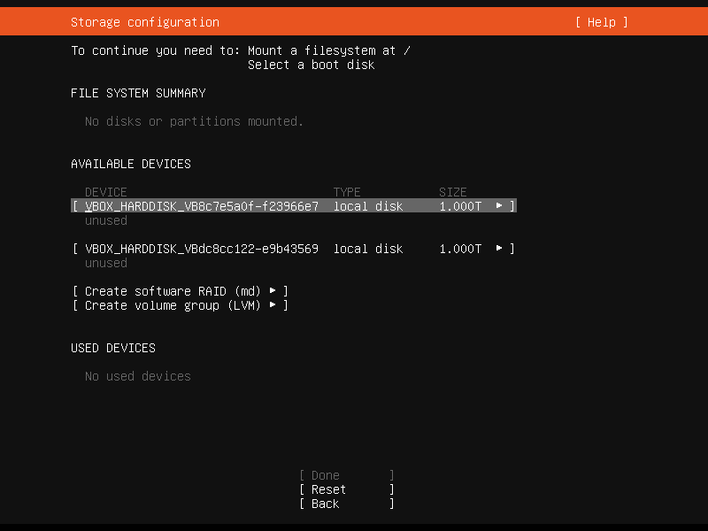
如果選錯了、或是硬碟中有已經分割好的磁區也沒關係，從 AVAILABLE DEVICES 下面選擇硬碟 ➜ 「Reformat」 ➜ 「Reformat」，這會把硬碟格式化。
選擇第一個磁碟 ➜ 「Use As Boot Device」 當作開機磁碟
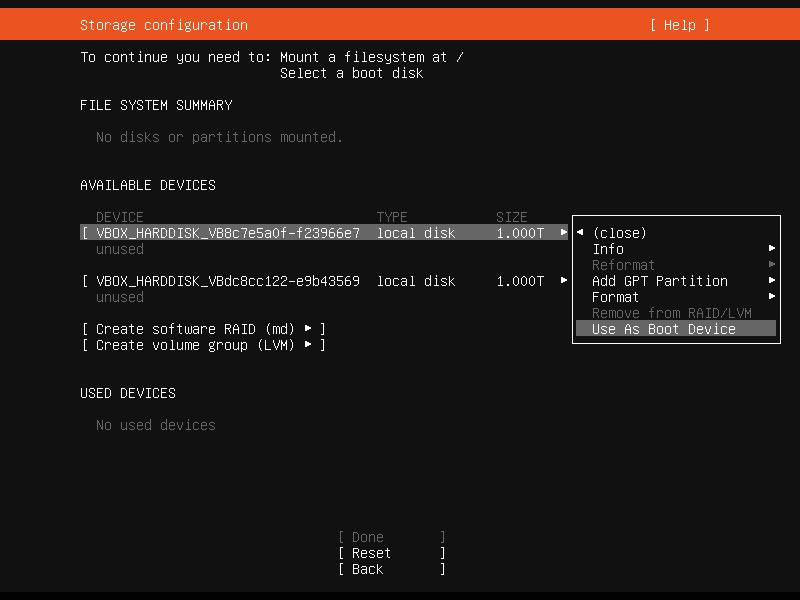
對第二個磁碟「VBOX_HARDDISK_VBdc8cc122-e9b43569」也做同樣的事情。
目前版本 20.04.2 live server 有個 bug，當你要新增為開機硬碟 (Boot Device) 時，要在建立其他三個分區 (/ 、 /boot 和 [SWAP])之前，先設定好，不然 1Mb 的 grub 分區會消失。(我只有從現過錯誤一次 2021.07.21)
接著為
/、/boot和[SWAP]做分區。/: 系統根目錄磁區/boot: 開機磁區[SWAP]: SWAP (記憶體置換空間) 主要功能是當記憶體滿載時，會把現在沒有用到的程序先放到 SWAP 中，空給目前正在運行的程式使用
首先為
/boot分區，通常開機磁區 512 Mb ~ 1Gb 就很夠用了，看你喜好，這裡我選擇 1Gb。選擇第一個磁碟 ➜ 「Add GPT Partitation」，照下面的設定設定後，按「Create」。Size:
1GFormat:
[ Leave unformatted ▾ ]
對第二顆硬碟做同樣的事。
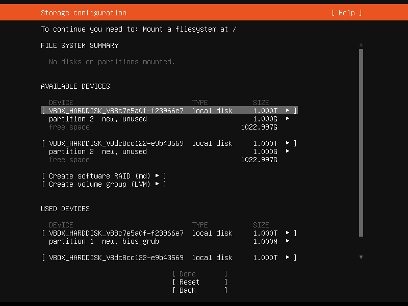
再來是
[SWAP]磁區，一般來說會用實體記憶體容量 ⨉ 2 作為[SWAP]磁區的容量，這裡我怕空間太少先用 32Gb。選擇第一個磁碟 ➜ 「Add GPT Partitation」，照下面的設定設定後，按「Create」。Size:
32GFormat:
[ Leave unformatted ▾ ]
對第二顆硬碟做同樣的事。
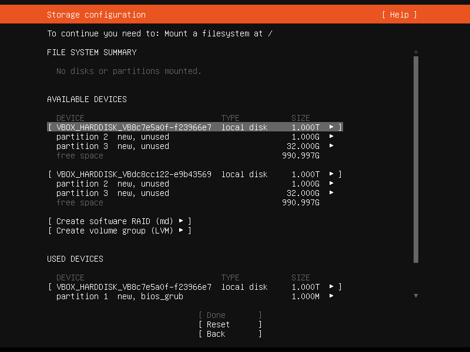
最後才是系統硬碟
/，系統硬碟使用/boot、[SWAP]與grub剩下來的空間。選擇第一個磁碟 ➜ 「Add GPT Partitation」，照下面的設定設定後，按「Create」。Size:
留空預設為剩下硬碟的容量，正是我們所要的Format:
[ Leave unformatted ▾ ]
對第二顆硬碟做同樣的事。
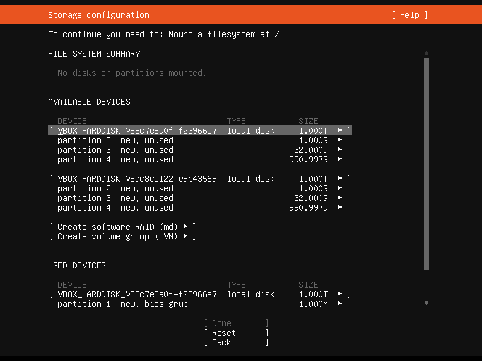
接著設定 Raid-1。選取「[ Create software RAID (md) ▸ ]」，選取兩個「partition 2」建立
md0softRaid 磁區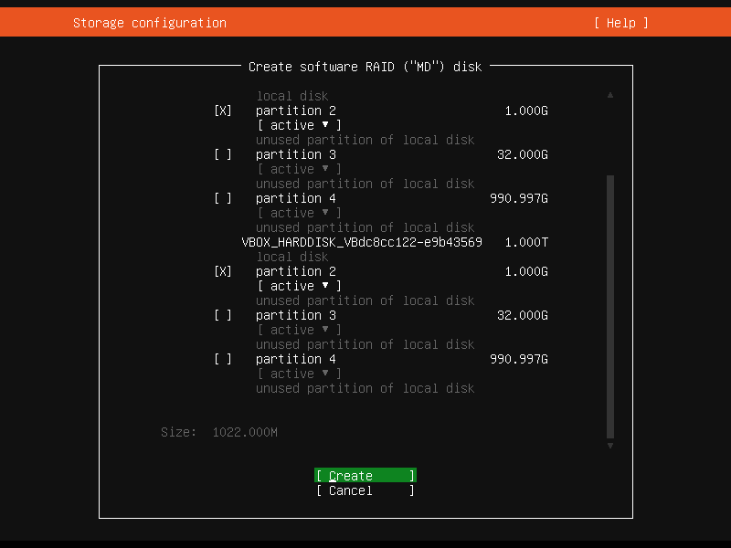
同上，選取「[ Create software RAID (md) ▸ ]」，選取兩個「partition 3」建立
md1softRaid 磁區同上，選取「[ Create software RAID (md) ▸ ]」，選取兩個「partition 4」建立
md2softRaid 磁區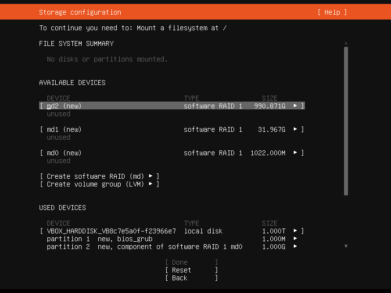
選擇
md0 (new)➜ format ➜ Format: 選擇ext4格式 ➜ Mount: 掛載於/boot➜ 完成後選擇 Done選擇
md1 (new)➜ format ➜ Format: 選擇swap格式 ➜ 完成後選擇 Done選擇
md2 (new)➜ format ➜ Format: 選擇ext4格式 ➜ Mount: 掛載於/➜ 完成後選擇 Done設定完成🎉，整體設定截圖:
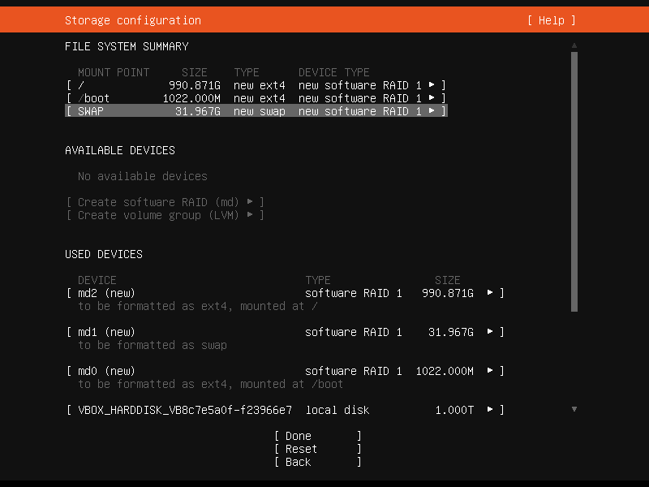
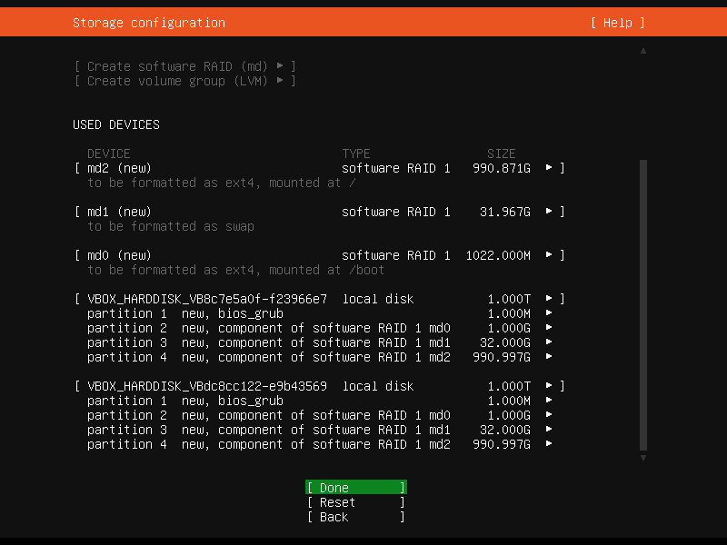
在最下面選擇「Done」，跳至下一步
1.3.2.8 使用者設定
在這邊設定自己的使用者名稱與電腦名稱。
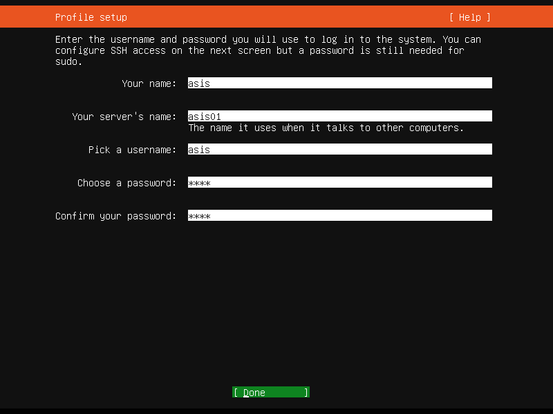
Your name:
asisYour server’s name:
asis01Pick a username:
asisChoose a password:
asisConfirm your password:
asis
1.3.2.9 OpenSSH 設定
OpenSSH 是使用 SSH 通訊協定來遠端連線電腦的工具。防止連線中被竊聽、劫持或是其他攻擊。如果沒有擁有 Github 帳號這裡可以先跳過，於第二章會重新介紹怎麼設定 OpenSSH 伺服器。
1.3.2.9.1 從 Github 匯入已經儲存的 public key
這裡將 Allow password authentication over SSH 取消打勾，經由 SSH 連線至虛擬主機時，關閉使用者密碼認證，改由 SSH key pairs 登入。
如果沒有持有 Github 帳號儲存的 public key，請把 Allow password authentication over SSH 打勾，待上傳完 public key 再把使用密碼登入關閉。
另外，我已經透過 Github 儲存過我的 public key 副本，所以這邊可以直接從 Github 匯入 public key。
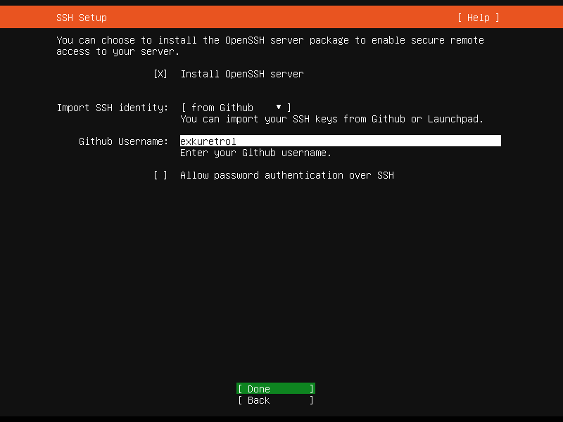
如果這邊不匯入的話，也可以待稍後開機後再用指令 ssh-import-id-gh <username> 匯入。
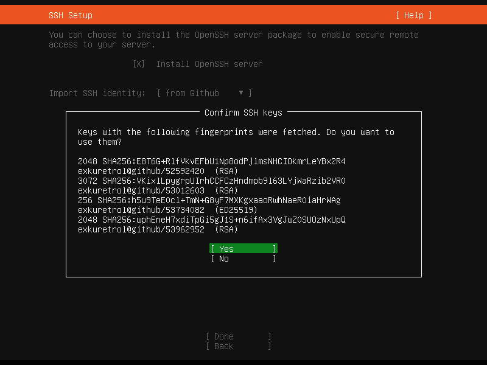
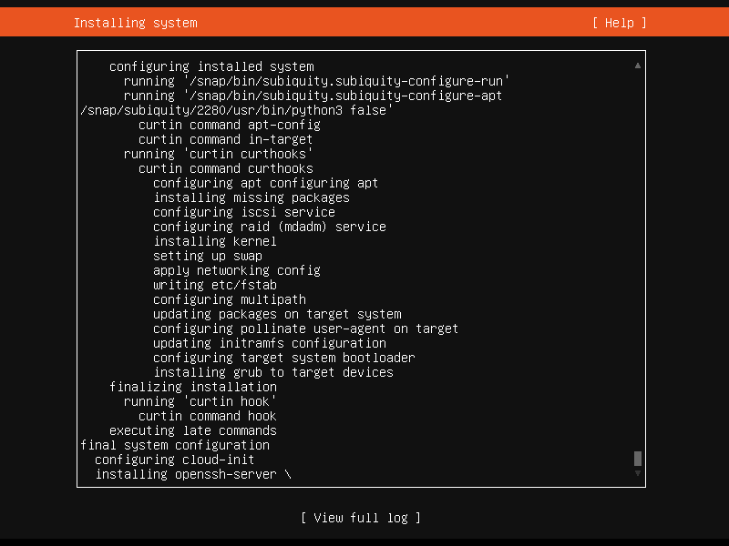
匯入成功後就能經由含有 Github 副本的 SSH key pairs 主機連線至虛擬機器
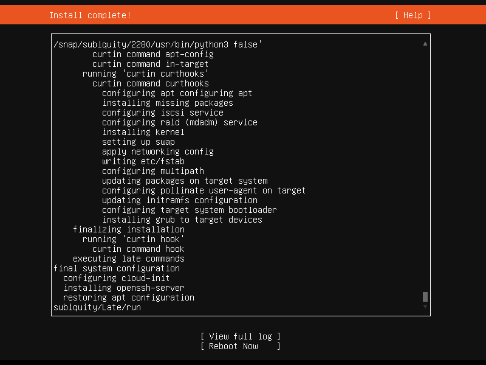
安裝完成後重新啟動